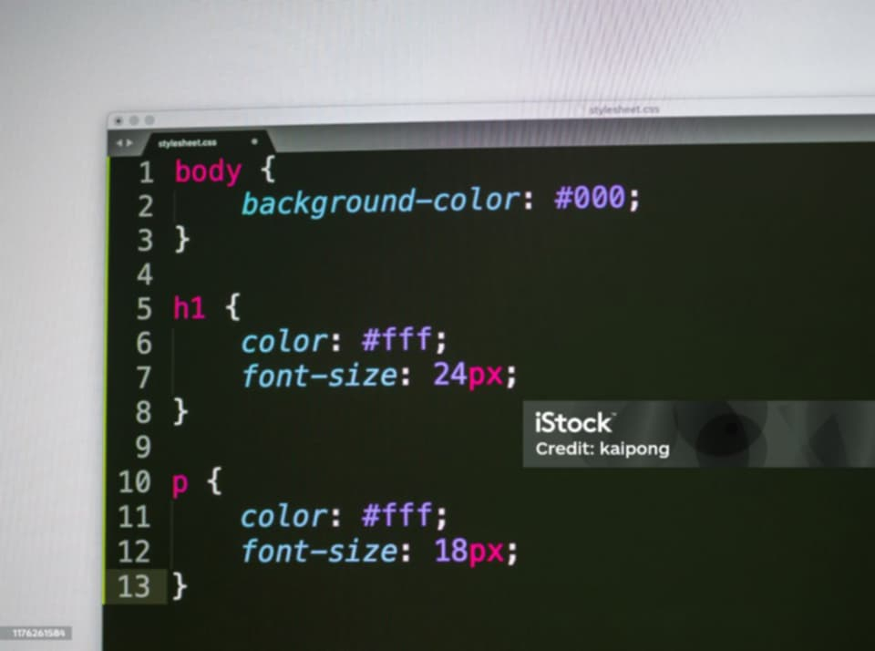

Le design responsive
Publié le 7 janvier 2026

Les technologies numériques évoluent rapidement et les gens utilisent différents appareils pour naviguer sur Internet, comme les ordinateurs, téléphones, tablettes ou télévisions connectées. Le design responsive est une méthode qui permet aux sites web de s’adapter automatiquement à tous ces écrans et de rester faciles à utiliser.
Définition du design responsive
Le design responsive ou responsive web design est une technique de création de sites web dont la mise en page change automatiquement selon la taille de l’écran. Le contenu, les images et les boutons s’ajustent pour rester clairs et faciles à utiliser.
Contrairement aux sites fixes, un site responsive fonctionne sur tous les appareils avec une seule version du site.
Description générale
Le design responsive facilite la navigation et rend l’expérience utilisateur intuitive.
- Structure de la page (colonnes, blocs, menus)
- Taille et orientation des images
- Taille et espacement du texte
- Boutons, formulaires et menus tactiles
Historique
Débuts du web
Dans les années 1990 et 2000, les sites étaient conçus pour des ordinateurs fixes et difficiles à adapter.
L’arrivée du mobile
Avec les smartphones et tablettes, les tailles d’écran ont beaucoup changé. Les développeurs ont d’abord créé des sites mobiles séparés.
La naissance du responsive
En 2010, Ethan Marcotte a présenté le responsive web design avec trois idées principales : grilles fluides, images flexibles et media queries.
Le responsive devient standard
Depuis les années 2010, le responsive est devenu la norme. Google et les moteurs de recherche favorisent les sites adaptés aux mobiles.
Principes techniques
Grilles fluides
Les colonnes et blocs changent de taille selon la largeur de l’écran.
Images flexibles
Les images s’ajustent automatiquement pour ne pas dépasser l’écran et pour charger rapidement.
Media queries
Les media queries sont des règles CSS qui changent le style du site selon la taille de l’écran.
Mobile-first
On commence par créer le site pour les petits écrans et on l’adapte ensuite aux écrans plus grands.
Exemples concrets
Site e-commerce
Les produits apparaissent en grille sur ordinateur et en colonne sur téléphone avec des boutons tactiles adaptés.
Site institutionnel
Les informations importantes sont visibles en premier sur mobile, tandis que toutes les rubriques sont accessibles sur ordinateur.
Blog ou site d’actualités
Les articles passent d’une page multi-colonnes sur ordinateur à une colonne sur mobile.
Exemple simple de code CSS
body { font-size: 16px; }
@media (max-width: 768px) { body { font-size: 14px; } }
Avantages et limites
- Avantages : Navigation facile, site accessible, meilleur référencement, maintenance simple
- Limites : Performance à optimiser, compatibilité entre navigateurs, complexité pour certains designs
Conclusion
Le design responsive est essentiel pour créer des sites web accessibles, performants et adaptés aux différents appareils.
Retour à l’accueil